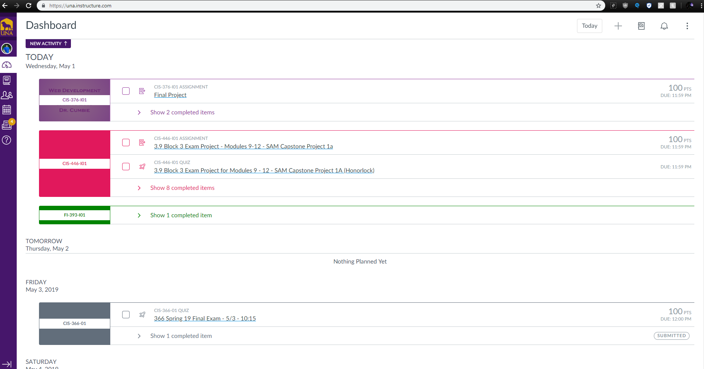
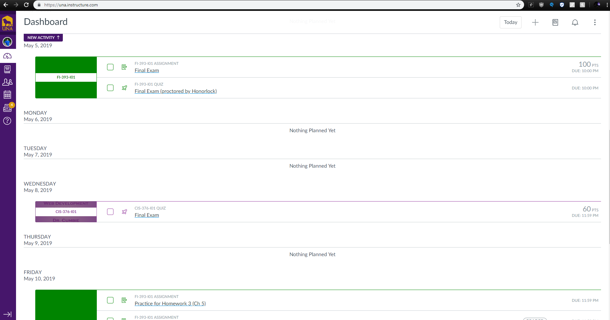

Dylan Richardson's Final Project
This is for the Final Project. I have decided to add an improvement to the Canvas website. Canvas is the application both teachers and students use to access assignments, colloborate with one another, post grades, so on and so forth. On the desktop version of Canvas, there is a To Do List calendar that shows a student their assignments and when they are due. The calendar follows the whole semester, as long as the teachers have posted all assignments for the semester. The issue I have with the ToDo List Calendar is that after scrolling down to see future assignments, to get back to where I can see the current date and assignments I have to scroll all the way back up to the top. I believe adding an additional option that is fixed with the screen that allows you to automatically be taken back to the current date.
The link to the improved design is in the top left corner of this page.
UNA Canvas
Here is an example of the current UNA Canvas web application. As you can see, it is a very useful tool that allows you to see all upcoming future assignments for the semester.
DashBoard ToDo List
The only issue is that after you have made it all the way to the bottom, you have to scroll all the way back up in order to get back to the current date.
